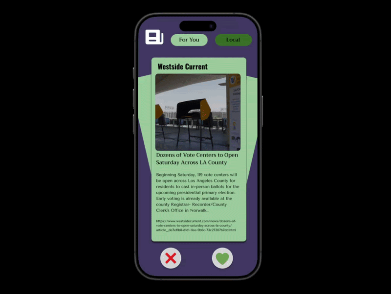
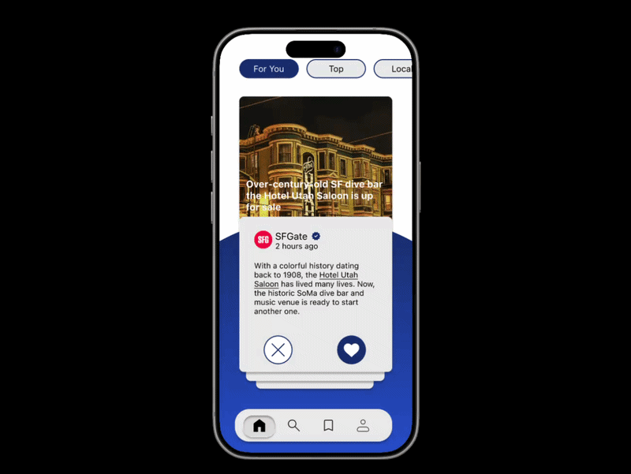
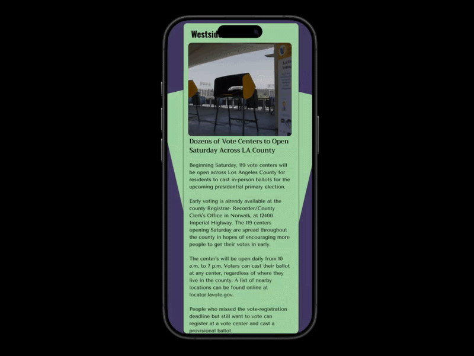
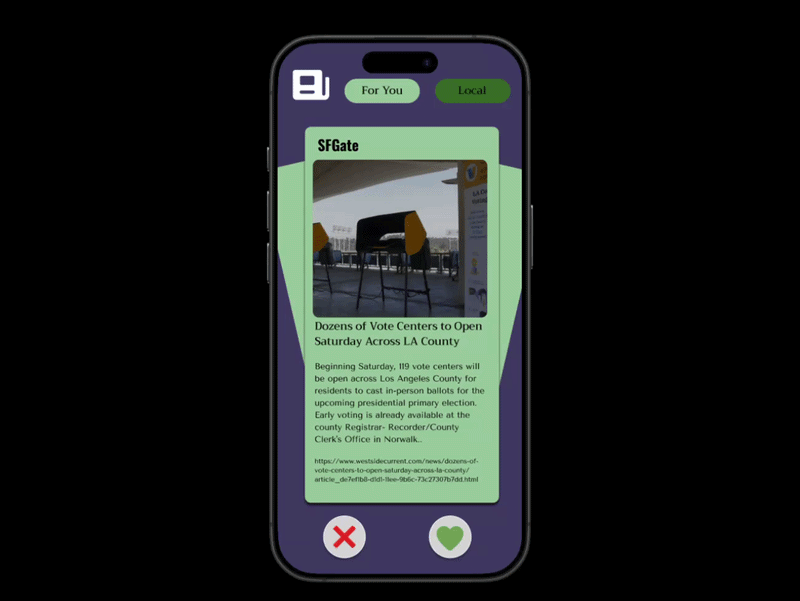
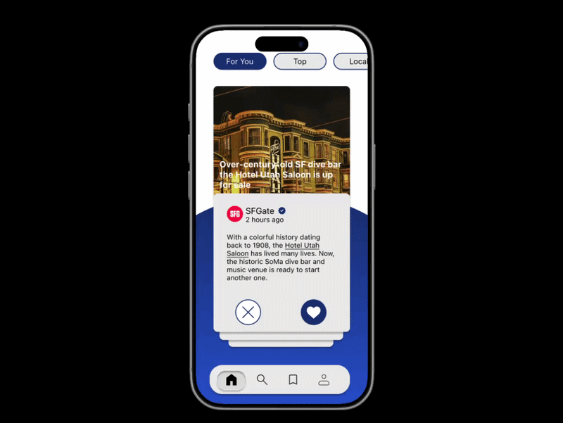

Solo Redesign · 2026
Anchored
An engaging, customizable way to stay up to date with current events.
- Role
- UI/UX designer
- Context
- Solo Redesign
- Focus
- Flows & interface design

Introduction
Anchored is a news aggregator app that fosters engagement with current events by being an anchor in a constantly changing world. Created during Design Interactive's 4-week Fellowship program in Fall 2024, my team and I synthesized ideation and UX research methods to design a news platform that keeps the youth engaged. In the summer of 2026, I went back and redesigned the project on my own to better reflect its original purpose, as well as to enhance the overall UI of the app.

Before getting into the redesign, I must first give credit to the team I worked with during the first iteration of Anchored. Though I ended up redesigning Anchored on my own, the idea originated from the research and ideation process we went through as a group, and this redesign project would not have been possible without my original team.
Stage 1: The Original Design
Reasoning
Anchored was the first end-to-end UI/UX design project I worked on, and it is how I broke into the field in the first place. Like many first attempts, there were noticeable areas of improvement regarding the UI and overall flow of the product. This outcome can be attributed to the little amount of time we left ourselves to design the app, which was done near the end of the 4-week sprint. The original concept itself, however, was one of our team's strengths, as much of our time was spent on ideation and user research. Because of this, the idea was still worth saving, which is why I took it upon myself to redesign Anchored.
Critiques


One major mistake that was made in the original design can be seen in its accessibility. It featured three different fonts: Tenor Sans for paragraph text, Tririrong for subheader text, and Oswald for header text. These fonts were chosen because of their existing presence in newspapers and other editorial works, and to capture that same essence of reading the news in our app. Despite this, the fonts generally had poor readability when combined with our existing color palette, that being purple and green. In contrast to the fonts, these colors were chosen rather arbitrarily, indicating inconsistencies in the design decisions made with this project.


Another mistake from Anchored's first iteration lies in its visual hierarchy. The app's premier feature was the card swiping UI it used for article browsing, which was inspired by Tinder's swiping UI. There was nothing inherently wrong with this feature, but centering the entire app around it came at the expense of navigation and overall UX. Navigation in the app was done through a dropdown menu in the top-left corner of the screen, which, while helping to minimize content, made for an unintuitive navigation experience for users wanting to access other features. Visual hierarchy was also lacking in the app's other main feature, that being the ability to comment on articles. This can be most obviously seen in how the keyboard popup and accompanying text box were misaligned, as well as the link to accessing these comments not being an obviously clickable button.


While the previous two mistakes were concerned with the visual content of the app, the third mistake is the lack thereof. Throughout the app, there was a noticeable absence of otherwise intuitive features, including interactivity for comments (e.g. liking and replying) and a complete profile section. These features were considered during the ideation phase, but were ultimately left partially finished or fully excluded from the final design due to time constraints. Moreover, the original design featured the swiping UI as the sole method of browsing news articles, failing to account for users who may also desire a more traditional browsing experience that is already present in most existing news aggregators.
These flaws could all be attributed to a suboptimal execution of our idea rather than an underlying issue with the idea itself, meaning that a full design overhaul could fix these aforementioned flaws. As such, I came back to this project and redesigned it from the beginning -- nearly two years after its original iteration.
Stage 2: User Research
Initial Methods
Our initial user research process involved the use of a Google Forms survey that received 60 respondents. Featuring a mix of multiple choice, Likert scale, and open-ended questions, the goal of this survey was to assess overall interest in current events, identify commonly desired features that current news aggregators lack, and determine an appropriate layout for a news app.
Initial Findings

The results demonstrated a low level of news engagement, with 43.3% of respondents rarely reading the news. Most respondents also preferred having a mix of short summaries and detailed articles, as well as a personalized news feed with a clean layout and easy navigation.
New Approach: Competitive Analysis

As part of my individual redesign process, I conducted a competitive analysis to further supplement the research results from the original iteration of Anchored. I compared Apple News and Google News--two of the largest news aggregators currently in the market--to identify their strengths and weaknesses. Apple News features a heavily curated news feed by human editors and limits personal data tracking, but much of its content is locked behind its paid subscription service, Apple News+, and it is only available on Apple devices in four countries. Google News, on the other hand, is mostly free to use and is available for more devices and countries than Apple News, but it lacks a way to hide advertisements and uses Google's algorithms to recommend news articles, leading to privacy concerns due to their usage of AI. This analysis overall highlights a need to integrate the accessibility of Google News and the customizability of Apple News, as well as an opportunity to increase user engagement.
Stage 3: Ideation
Initial Ideation

During the initial ideation phase, my team and I decided to focus on features that allow the most feed customization, and that younger users are used to. To accomplish this, we built Anchored around four key features:
• A swiping feature akin to that of Tinder, where swiping right would save the article and swiping left would remove it from the user's view and feed
• Like and Dislike buttons as an alternative to swiping right and left, providing the same respective functionality
• Bookmark section for accessing previously saved stories
• Shortened summaries that appear as an expandable preview of the full article
New Ideation
My ideation process for the redesign project aimed to expand on these key features from the original iteration of Anchored, as well as to add several more. As stated previously, one of the flaws with the original design was that it did not account for users wanting a more traditional article browsing experience, with the swiping feature as the core method of browsing. Additionally, the saved stories and profile pages were left incomplete and lacked several important features that each respective page should have (e.g. collections for saved stories and editing options for profile). I came up with a few features to address these flaws:
• Ability to organize saved stories into collections that can be displayed publicly or kept private
• Editing and sharing options for profile
• Follow news outlets directly to stay updated on their postings
• A traditional browsing and search page
Low-fidelity designs

The wireframing stage of the redesign allowed me to visualize my ideas for improving Anchored. Here, I kept most pages from the original version, but I added a few more to reflect the new ideas I came up with, namely the updated profile and comments pages, as well as the new search page. Through the wireframing process, I was then able to organize these ideas into a new user flow.
User Flow

As the original version of Anchored lacked a dedicated user flow, I created one during the redesign process to better define the original scope of the project and its features. The new flow did not diverge significantly from the old one, feature the same core components of card swiping to find and save articles, shortened expandable summaries, and commenting. Specifically, users can swipe right or tap the Like button on an article to save it in the Saved Stories section, or they can expand the shortened summary to see its full context and make comments. However, the new flow includes the addition of a traditional search function, which users can use to find a specific article, event, or news outlet without needing to use the swiping feature. The profile page is also now updated, with settings and edit buttons allowing further customizability for both the user's profile and their feed. With both my lofi sketches and user flow, I was prepared to incorporate my ideas into mid-fi wireframes in Figma.
Core Features
1. Article Swiping & Saving
2. Expandable Summaries
3. Commenting
Problem Statement (HMW):
How might we design a news feed that helps keep users informed about relevant topics without overwhelming them?
Stage 4: Mid-Fidelity Prototyping
Article Swiping, Full Article View, and Commenting

Article swiping allows users to browse and save news articles in an engaging, gamified manner, in which swiping right saves the article while swiping left removes it from the user's view. The expandable shortened summary allows users to get an idea of what the article is about before swiping on it, and it also allows users to read the full article if they decide that they are interested. Commenting allows users to share their thoughts on articles and topics they are passionate about, adding a social aspect that further enhances news engagement.
Saved Stories, User Profile, and Traditional Search

The saved stories page is where users can find stories they have swiped right on, providing access for future viewing and management. The profile page gives users the option to edit their profile or share it with other people, and users can also use the following feature to follow other users, as well as the official accounts of major news outlets to ensure they are always getting the latest news. The traditional search page, separate from the swiping (home) page, provides a standard browsing experience via the use of vertical scrolling, along with a search bar at the top of the page where users can search for specific events, articles, or news outlets. These features further promote engagement with current events by providing an aspect of feed customizability and socialization, while also accounting for users who wish for a more similar experience to existing news aggregators.
Usability Testing
The usability testing phase for my redesign of Anchored consisted of the following tasks:
• Browse articles - find an article to save and swipe right
• From the home (swiping) page, access the full version of an article
• Write a comment
• Go to the search page and search for a news outlet
• Find saved stories
Findings
The usability testing phase demonstrated a need for further design changes to optimize user experience, which I implemented in the high-fidelity designs. Most notably, the Saved Stories and Search pages needed more content, which, along with a finalized design system, were included in the high-fidelity designs to improve overall user experience.
Stage 5: Hi-Fidelity Prototyping
Design System

My design system for the Anchored redesign was centered around creating a simple yet intuitive design with modern aesthetics. As such, I used plentiful iconography in both the navigation bar and the individual pages, as well as corner rounding in most of my components, all of which were displayed in a modular format. The new color palette I chose for Anchored incorporated a plain white background with royal blue as the primary color, as to convey a sense of simplicity when using the platform and a feeling of trust in the news stories featured on it. I used SF Pro font for the typography due to its easy legibility and existing use in many iOS apps, providing a smooth experience when switching over from other platforms.
Old (left) vs. New (right): Swiping


The swiping feature was originally designed with a simple premise. Users could swipe right or press the Like button on articles to save them, or remove it from their view by pressing the Dislike button or swiping left. In the redesign, I took the existing formula a step further: while Disliking and swiping both right and left still serve the same function, pressing the Like button now gives the user the option to save the story to a specific collection. This way, users can add articles to specific saved collections while browsing, or they can swipe right to quickly save the article without being prompted. One notable UI change that was made in the new version was positioning the article cards such that they appear stacked on top of each other. This was done to make the swiping UI more intuitive, and to ensure users know what to do once on the page.
Old (left) vs. New (right): Full Article

Anchored's original full article page would expand directly from the article's position on the swiping page, allowing users to read the full article if they decide to. The comments section in the original iteration was accessible at the bottom of the full article page via a snippet of clickable text, which, while functional, could have been designed more intuitively. In the new design, the full article is displayed in a separate page after clicking on its shortened summary, and comments are accessible in a much more clearly labeled comments box near the top of the article, solving the aforementioned issue with the first iteration's comments section. Another change in the new version is the option to Like and reply to the comments of other users, adding a social aspect and promoting user engagement with the platform. The old version had the additional flaw of lacking information in the full article page, which was solved in the new version through including the author and date, as well as a verification icon next to the usernames of verified news outlets to indicate that they are legitimate sources.
Old (left) vs. New (right): Navigation


Navigation in the original iteration of Anchored was done through a dropdown menu that was accessible from the main swiping page. While this helped to reduce visual clutter on the swiping screen, it required two clicks--one to open the dropdown menu and one to select a destination--to access any other page in the app. In the redesign, I reduced the navigation process to one click per destination by implementing a simple navigation bar at the bottom of each screen. Out of said destinations, the only functional one on the old version of Anchored was the incomplete profile page, which was completely overhauled in the redesign. The new profile page, being built upon the one I designed for my mid-fis, now allows users to write a short description that is visible to other users, and they can also display their saved collections and most read topics (via Top Interests) if they choose to. These saved collections live on the saved stories page--another page previously inaccessible from the old Anchored navigation menu--where users can create new collections, modify existing ones, or make certain collections private if they wish not to display them publicly. Another new addition to the Anchored redesign is the search page, which is where users can search for specific news stories or outlets and scroll through articles as they would on traditional news apps.
Takeaways and Next Steps
Through redesigning Anchored, I learned that critical self-evaluation and the willingness to turn that criticism into action are crucial for a successful redesign project. Moving forward, I desire to further expand and improve upon the features from this redesign in a third iteration of Anchored, and possibly turn it into a working full stack application. As such, I also intend to look into advertisements, paid subscription options, and sharing revenue with publishers to promote scalability with Anchored's business model.
See on Figma ↗